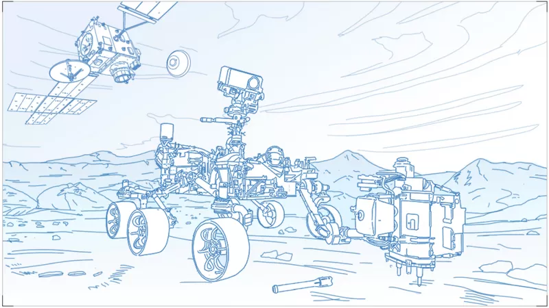
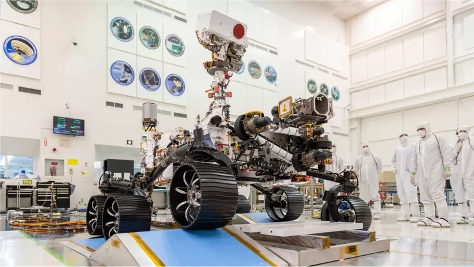

ማርስ ላይ ሕይወት ነበረ? 2 ቢሊየን ዶላር የወጣባት ሮቦት መልስ ይኖራታል
21 ሚያዝያ 2022

ማርስ ላይ ሕይወት ነበረ? 2 ቢሊዮን ዶላር የወጣባት ሮቦት መልስ ይዛ ትመጣ ይሆናል፡፡
የአሜሪካ የሕዋ ኤጀንሲ 'ፐርሴቪራንስ' ሲል የጠራውን ወሳኝ ሮቦት ወደ ሕዋ አምጥቋል፡፡ ለዚህ ጽሑፍ ምቾት ሲባል እኛ ይቺን ሮቦት ብጤ መሣሪያ ‹ጽናት› እያልን እንጠራታለን፡፡ የ‹ጽናት› ዋና ተልእኮዋ ከቀይዋ ፕላኔት ማርስ ናሙና እየሰበሰቡ አንድ ቦታ ማጠራቀም ነው፡፡ "ጽናት" አንድ ቶን ትመዝናለች፤ 6 ተሸከርካሪ እግሮች አሏት፡፡ የዋዛ እንዳትመስላችሁ፡፡ እጅግ ውስብስብ ናት፡፡ የተወነጨፈችው ሐሙስ ዕለት ከአሜሪካ፣ ፍሎሪዳ በአትላስ ሮኬት ላይ ሆና ነው፡፡ ‹ጽናት› ቀይዋ ፕላኔት የምትደርሰው በሚቀጥለው ዓመት በየካቲት ወር አካባቢ ነው፡፡ ጉዞው 7 ወራት ይወስዳል፡፡ ልክ ማርስ እንዳረፈች ታዲያ እየተሸከረከረች ዐለትና አፈር ቆንጥራ ወደ የቱቦ ቋት በማስገባት ታጠራቅማለች፡፡ እሷ ያጠራቀመችው ተሰብስቦ የሚመጣው ምናልባት ይህን ጽሑፍ የሚያነቡ ሰዎች ሲሶዎቹ ሞተው ሲያበቁ ይሆናል፤ በ2031 ዓ.ም ፡፡
- link1
- link2
- link3
ባለፉት 11 ቀናት ብቻ ወደ ማርስ ከተደረጉ ተልእኮዎች ‹ጽናት› ሦስተኛዋ ናት፡፡ ከሰሞኑ የተባበሩት አረብ ኢምሬትስም ሮኬት አመንጥቃለች፡፡ ቻይናም ለመጀመርያ ጊዜ በታሪኳ በተናጥል ወደ ማርስ ተልእኮ ያደረገችው ከሳምንት በፊት ነበር፡፡ ‹ጽናት› ከፍሎሪዳ፣ ኬፕ ካናቭራል አየር ኃይል ጣቢያ ጠዋት በአገሬው አቆጣጠር 07: 50 ላይ ነበር ወደ ሕዋ የተመነጠቀችው፡፡ የናሳና የኢሳ ሳይንቲስቶች ‹ጽናት› በሰላም ማርስ ላይ እንድታርፍ ከፍተኛ ፍላጎት አላቸው፡፡
ማርስ ከፍሎሪ ብዙ ትርቃለች?
ጎረቤት ማርስ ቅዝቃዜዋ ለጉድ ነው፡፡ በዚያ ላይ ከባቢ አየሯ ከምድር ከባቢ ጋር ሲነጻጸር በመቶ ጊዜ የሳሳ ነው፡፡ በመጠኗ የመሬትን ግማሽ ብታክል ነው፡፡ ከፀሐይ ከኛ ፕላኔት በግማሽ ርቃ ነው የምትገኘው፡፡ ለዚህም ይሆናል የሚበርዳት፡፡ ለዚህም ይሆናል ፀሐይን ለመሾር ከኛ ዘለግ ያለ ጊዜ የሚወስድባት፡፡ ለመሆኑ ማርስ ከመሬት በምን ያህል ኪሎ ሜትር ትርቃለች? እውነት ለመናገር የዚህ ምላሽ ቋሚ አይደለም፡፡ እንደ ወቅቱ ይለያያል፡፡ ምክንያቱም እኛም በምህዋራችን ስንሾር፣ ማርስም ትሾራለች፡፡ መሬትና ማርስ ፀሐይን ሲሾሩ በተለያየ ፍጥነትና በተለያየ ርቀት ነው ታዲያ፡፡ ይህም በመሀላቸው ያለው ርቀት ተለዋዋጭ እንዲሆን አድርጎታል፡፡ አንዳንዴ ማርስ ከኛ 400 ሚሊዮን ኪሎ ሜትር ነው የምትርቀው፡፡ አንዳንድ ጊዜ ደግሞ ስንቀራረብ ጎረቤት ማርስ በ56 ሚሊዮን ኪሎ ሜትር ርቀት ትሸሸናለች፡፡ ለዚህ ነው ‹ጽናት› በራሪ ሮቦት ከፍሎሪዳ ማርስ ለመድረስ 7 ወራት የሚወስድባት፡፡ አሁን በብዛት ማርስ ተብሎ የሚታየው ፎቶ፣ ማርስ መሬትን በጣም በቀረበችበት በፈረንጆች በ2003 አካባቢ የሀብል ስፔስ ቴሌስኮፕ ያነሳውን ፎቶ ነው፡፡ ማርስ መሬትን በዚያን ያህል ቅርበት የተጠጋቻት ከ60ሺህ ዓመታት በኋላ መሆኑ አስደናቂ ነው፡፡ ከዚህ በኋላ ማርስ መሬትን በእዚህ ቅርበት የምትጠጋት መቼ ይመስላችኋል? እንደ አውሮፓዊያኑ አቆጣጠር በ2287 ዓ. ም፡፡ ያን ጊዜ የዚህ ጽሑፍ ጸሐፊም ሆነ የዚህ ጽሑፍ አንባቢ ግብአተ መሬታቸው ተፈጽሟል፡፡
በማርስ ወለል ላይ ማረፍ ለምን ፈተና ሆነ?
የዚህ መልስ ከመልክአ-ማርስ ጋር ይያያዛል፡፡ መልከአ ምድር እንደምንለው መልከአ ማርስም እንላለን፡፡ ለምን አንል? በማርስ ማረፍ በሳይንቲስቶች ዘንድ ‹‹የ7 ደቂቃ ሽብር›› እየተባለ ይጠራል፡፡ በርግጥም አሸባሪ ስለሆነ ነው፡፡ ለምን መሰላችሁ? አንደኛ ወደ ማርስ የምንልከው መንኩራኩርም ሆነ ሌላ በሰዓት 10ሺዎች ኪሎ ሜትር ይምዘገዘጋል፡፡ ይህ በራሱ ችግር አይደለም፡፡ የማርስ ከባቢ ውስጥ ሲገባ ነው ጭንቅ የሚሆንበት፡፡ የማርስ ከባቢ አየር ሲዘልቅ መንኩራኩሩ ትክክለኛውን አንግል ማግኘት አለበት፡፡ በጣም ቁልቁል ሆኖ ወደ ማርስ ቢገባ ቀልጦ ይነዳል፡፡ ትንሽ በስላሽ ወይም በጎንዮሽ ከሆነ ደግሞ ነጥሮ ይመለሳል፡፡
ሁለተኛ የማርስ ከባቢ አየር ከመሬት ከባቢ ጋር ሲነጻጸር በመቶ እጅ የሳሳ ነው፡፡ ለዚህ ነው ነገሩ ሁሉ ፈታኝ የሚሆነው፡፡ ሮቦቱ ከባቢ አየሩን አልፎ ገብቶም ቢሆን በቀላሉ ለማረፍ መልክአ ማርስ አይመችም፡፡ ለምን አይመችም? አንደኛ ማርስ በጣም አለታማ ነው፤ ሁለተኛ ጠፍጣፋ አይደለም፣ ሦስተኛ በምድር ላይ ያለ ገደል ቢቀጣጠል ማርስ ላይ ያሉ ገደሎችን አይበልጥም፤ በጣም ገደላማ፣ በጣም ሸለቋማ ከመሆኑም በላይ ሐይቅ መሰል ነገር፣ ሽንቁር፣ ስንጥቅጥቅ፣ ዋሻ…ብቻ ምን አለፋችሁ መልክአ ማርስ የሌለ ዓይነት ውጥንቅጥ የለም፡፡
‹ጽናት› ሮቦት ማርስ የተላከችው ምን እንድትሰራ ነው?
ጽናትን እንደ ቆሻሻ ለቃቃሚ አስቧት፡፡ ዐለት ከዚያም ከዚህም ለቃቅማ ግን ይዛው አትመጣም፡፡ በመልክ በመልኩ ትሰድረዋለች፡፡ ውስጡ ትቦ ያለው ሰፊ ቧንቧ ነገር አላት፡፡ የለቃቀመችውን ማስቀመጫ፡፡ ይሄን ማሸጊያ በአለትና ሌሎች ቁሶች እየሞላች መተው ነው፡፡ ይህን ሁሉ ለፍታ ግን የለቃቀመችውን ይዛ አትመጣም፡፡ ባዶ እጇን ነው የምትመጣው፡፡ የ ‹ጽናት› ሥራ መልቀም፣ ለቅሞ መጠቅለል፣ ጠቅልሎ እዚያ አከማችቶ መመለስ ነው፡፡ ናሳ በዚህ አስቸጋሪ ጊዜ የ‹ጽናት› ተልእኮ እጅግ ወሳኝ ሆኖበት ቅድሚያ ሰጥቶታል፡፡ ኮሮናቫይረስ አሜሪካንን እያመሰ ባለበት ሰዓት አዲስ የሥራ እቅድና ፈረቃ በማዘጋጀት የ‹ጽናት› ተልእኮ በታሰበለት ጊዜ እንዲሳካ ሆኗል፡፡ ‹‹አልዋሻችሁም፤ ፈታኝ ጊዜ ነበር፡፡ አስጨናቂ ጊዜ ነበር፡፡ ተመልከቱ ምን እንዳሳካን፣ እንዴት እንደኮራን ልነግራችሁ አልችልም፡፡ ይህ እጅግ ደስ የሚል ነገር ነው›› ብለዋል የ ‹‹ጽናት›› ተልእኮ አስተባባሪ ጂም ብራይደስቲን፡፡ ጽናት አሁን ትኩረት እንድታደርግበት የተፈለገው የማርስ ክፍል ‹‹ጀዜሮ ክሬተር›› ይባላል፡፡ አርባ ኪሎ ሜትር ስፋት ያለው ስፍራ ነው፡፡ መሬት ላይ ብናስበው ልክ ሀሮማያ ሐይቅ አካባቢ ማንዣበብ ማለት ነው፡፡ ይህ ‹ጀዜሮ› በመልከአ ማርስ ከሚገኙ ቦታዎች ሁሉ ድሮ የዛሬ ቢሊዮን ዓመት ሐይቅ ነበረበት ተብሎ የሚታሰብ ቦታ ነው፡፡ አሁንማ እንኳን ጀዜሮ ዓለማያ ሐይቅም ደርቋል፡፡ ‹ጽናት› ሮቦት የድሮው የማርስ ሐይቅ (ጀዜሮ) አካባቢ እንድታንዣብብ ለምን ተፈለገ? ምክንያቱም ጀዜሮ ሐይቅ መሰል ጎድጓዳ ስፍራ ሲሆን፣ ከዚህ ቀደም የተወሰዱ የሳተላይት ምሥሎች ይህ ስፍራ ምናልባት ከቢሊዮን ዓመታት በፊት ሐይቅ እንደነበር ጥቁምታን በመስጠቱ ነው፡፡ ሐይቅ ከነበረ ደግሞ ሕይወት ነበረ ማለት ነው፡፡ ይህን የሚያረጋግጥ ነገር ካለ ሊኖር የሚችለው እዚህ አካባቢው በሚገኙ ዓለቶች ነው የሚሆነው፡፡ አሁን የሳይንቲስቶቹ ተስፋ እዚህ ሐይቅ ነበረ ተብሎ በሚታመንበት ስፍራ የሚገኙ የዐለት ቅሪቶች በዚች ‹ጽናት› ባሏት ሮቦት ተለቅሞ እንዲጠራቀም ነው፡፡
በእርግጥ በማርስ ከአንድ ከቢሊዮኖች ዓመት በፊት ደቂቀ አካላት ኖረዋል? ሕይወትስ ነበረ? ለሚለው አንዳች ፍንጭ ይሰጣል ‹ጽናት› ሮቦት የምትለቃቅመው ነገር፡፡ ጽናት በማርስ አካል ላይ እንደ ሄሊኮፍተር እየተሸከረከረች በዚያ የምትጸናው ለአንድ የማርሻን ዓመት (የምህዋር ዘመን) ይሆናል፡፡ ይህም ማለት በመሬትኛ አቆጣጠር ሁለት ዓመት አካባቢ መሆኑ ነው፡፡ ናሳ እንደ ጽናት ዓይነት ሮቦት ወደ ማርስ ሲልክ የመጀመርያው አይደለም ታዲያ፡፡ ኾኖም ‹ጽናት›ን ከሌሎቹ ልዩ የሚያደርጋት የተገጠሙላት እጅግ ረቂቅና ውስብስብ መሣሪያዎች ናቸው፡፡ ሕይወት የነበረው ነገር ቅሪት ብታገኝ ‹ቀጨም› ማድረግ ትችላለች፡፡ ያ ማለት ግን በ ‹ጽናት› የተገኘ አካል ሁሉ ሕይወት የነበረው ቅሪት ነው ማለት አይደለም፡፡ ‹ጽናት› ወደፊት ወደ ምድር ተሰብስቦ የሚመጣን የዐለታ ዐለት ቅሪት ከሰበሰበች በኋላ በመልክ በመልክ ሰብስባ እዚያው አሽጋ ታስቀምጠዋለች፡፡ ወደፊት በሌላ ተልእኮ፣ በሌላ ሮቦት ወደ ምድር ተሰብስቦ ይመጣና እዚህ ቤተ ሙከራ ውስጥ ለዓመታት ፍተሻ ይደረግበታል፡፡
‹ጽናት› ከሌሎች በምን ትለያለች?
ጽናት እንዲሁ ስትታይ የዋዛ ነው የምትመስለው፡፡ የዋዛ ግን አይደለችም፡፡ ብዙ ሰዎች ሲያይዋት ይህቺማ በ2012 በፈረንጆች ወደ ማርስ ናሳ የተላከችው ጌል ክሬተር ራሷ አይደለችም እንዴ ይላሉ፡፡ በቅርጽ ስለሚመሳሰሉ ነው እንጂ ‹ጽናት› ከ ‹ጌል› ትለያለች፡፡ ከዚህ በፊት ወደ ናሳ ከተላኩ ሮቦቶች የተራረፉ የሰውነት አካላት ቢገጠሙላትም አዲስ ናት፡፡ ለምሳሌ እጅግ የጠራ ምሥል አንስተው የሚያስቀሩ 23 ካሜራዎች አሏት፡፡ መቅረጸ ድምጽም እንደዚያው፡፡ ‹‹ የተወሰኑ ድምጾችን እናገኛለን ብለን እንጠብቃለን፡፡ ለምሳሌ ‹ጽናት› ሮቦት በማርስ ወለል ላይ ስታርፍና እንደገና ለመብረር ስትነሳ፣ እንዲሁም ወዲያና ወዲህ ስትቅበዘበዝ የሚያሳዩ ምሥሎችም ድምጾችም ይኖሩናል›› ይላሉ የቴክኒካል ጉዳዮች ኃላፊ ጂም ቤል፡፡ ናሳ በማርስ ላይ ሕይወት ነበረ ወይ ከሚለው መሠረታዊ ጥያቄ ባሻገር ወደፊት በማርስ ላይ ሰፊ ምርመራ አድርጎ ለሌሎች ሰውን ለሚጠቅሙ ጉዳዮች ቀይዋን ፕላኔት ለማሰናዳት ይሻል፡፡ ለምሳሌ ማርስን ከሞላት የካርቦንዳይኦክሳይድ ከባቢ ውስጥ ኦክሲጅንን መፍጠር ይቻላል ወይ የሚለው ይጠናል፡፡ ማርስ 95 ከመቶ ካርቦንዳይኦክሳይድ ነው የሞላት፡፡ ለምሳሌ በዚህች ጽናት ሮቦት ውስጥ የተለያዩ ጠፈርተኛ ቱታዎች ይገኛሉ፤ ቱታ ማርስ ውስጥ ምን ይሰራል ይሉ ይሆናል፡፡ ቱታዎቹ የተያዙበት ዓላማ ለማርስ አስቀያሚ የአየር ንብረት የትኛው የጠፈርተኛ ቱታ የተሻለ ነው የሚለውን ለመመርመር ነው፡፡
ጀዜሮ የማርስ 'ሐይቅ' ሳይንቲስቶች ላይ ለምን የተለየ ጉጉት ፈጠረ?
ለመሆኑ ስሙ ራሱ ከየት መጣ? ጀዜሮ በቦስኒያ ሄርዘጎቪኒያ ያለች ከተማ ስም ነው፡፡ በስላቪክ ቋንቋ ጀዘሮ ማለት ሐይቅ ማለት ነው፡፡ ለዚህም ነው ማርስ ላይ ያለው ጎድጓዳ ስፍራ ጀዜሮ የተባለው፡፡ ይህ 500 ሜትር ጥልቀት ያለው ጎድጓዳ ስፍራ ሳይንቲስቶቹን በጉጉት ሊገድላቸው ምን ቀረው? የውሀ ቅንጣት የሚመስል ነገር ትርጉሙ ብዙ ነው፡፡ አንዳች ሕይወት አከል ነገር ነበረ? ካልነበረ እንዴት የውሀ አካል ይኖራል? ተመራማሪዎቹን ያጓጓቸው ይኸው ነው፡፡ ‹ጽናት› በዚህ ስፍራ ነው አብዛኛውን ዘመኗን የምታሳልፈው፡፡ ጀዘሮ ሐይቅ ነበር ካልን እዚያ አካባቢ ሸክላና ካርቦኔትስ ዐለቶች ይገኛሉ ማለት ነው፡፡ እነዚህ አለቶች ደግሞ ሕይወት ያለው ቅንጣትን ጠብቆ የማቆየት ባሕሪ አላቸው፡፡ ይህ ከሆነ ደግሞ ባለፉት ቢሊዮን ዓመታት ውስጥ በቀይዋ ፕላኔት ሰው አልያም፣ ሰው መሰል ፍጡር ወይም ሌላ አካል ነበረ ወይ ለሚለው ፍንጭ ይሰጣል፡፡ ጥርጥር የለውም፡፡
‹ጽናት› ሮቦት በማርስ የለቃቀመችው መቼ መሬት ይመጣል?
‹ጽናት› ለቃቅማ የምታመጣቸው ዐለቶች በማርስ በአንድ ወቅት የአንድ የሕይወት መኖር ፍንጭ ከሰጡ በሚል ምድር ላይ የቤተሙከራ ምርመራ ያደርጋሉ ብለናል፡፡ ለዚህም ነው ጽናት የተመረጡ ዓለቶችን ትንሽ ምርመራ እያደረገች አንድ ቦታ እንድታጠራቅማቸው የተፈለገው፡፡ የምታጠራቅማቸው ደግሞ በጀዜሮ ጎድጓዳ ሐይቅ መሰል አካባቢ ባለ ሰፊ ቦታ ይሆናል፡፡ ከዚያ ወደፊት ናሳ (የአሜሪካ የሕዋ ማዕከል) እና ኢሳ (የአውሮፓ የሕዋ ማዕከል) እነዚህን በ ‹ጽናት› የተቆለሉ አለቶችን ሄደው ያመጧቸዋል፡፡ ሌላ ሮቦት ይላካል፡፡ የሚቆለሉት ደግሞ በአንድ ቧንቧ መሰል ሰፊ ትቦ ያለው መሳሪያ ውስጥ ነው ብለናል፡፡ መቼ ነው ጽናት የቆለለቻቸውን የአለት ትቦዎች ለማምጣት የሚኬደው ከተባለ የዛሬ 26 ዓመት ነው መልሱ፡፡ በ2026፡፡ ያን ጊዜ የማርስ ሮኬት እና ሳተላይት ተጣምረው እነዚህን ትቦዎች ወደ መሬት ለማምጣት ሙከራ ያደርጋሉ፡፡ በ2026 ተሳፍረው ሄደው በ2031 አካባቢ ለመመለስ ነው እቅዳቸው፡፡ የዚያ ሰው ይበለን፡፡ ‹‹ነገሩ ውስብስብ ነው፤ የሚሳተፉት ሮቦቶች ብዛትና ውስብስብነት ስታይ የአፖሎ ጨረቃ ላይ ለመጀመርያ ጊዜ መርገጥ ዓይነት ልትለው ትችላለህ›› ብለዋል ዴቪድ ፔከር፡፡ ዴቪድ የአውሮጳ የሕዋ ኤጀንሲ የሰውና ሮቦት አሰሳ ዳይሬክተር ናቸ። ናሳና ኢሳ ናሙናዎችን ከማርስ ለማምጣት 7 ቢሊዮን ዶላር ከስክሰዋል፡፡ ይህ ወጪ ለ‹ጽናት› ሮቦት የወጣውን 2.7 ቢሊዮን ዶላርንም ይጨምራል፡፡ ምናልባት ከሁለት ዐሥርታት በኋላ ስለ ጎረቤታችን ማርስ የምናውቀው ነገር ብዙ፣ በጣም ብዙ ሊሆን ይችላል፡፡ ማርስ እኛን የመሰሉ ጎረቤቶች ኖረውበት ይሆናል፡፡ ማን ያውቃል?